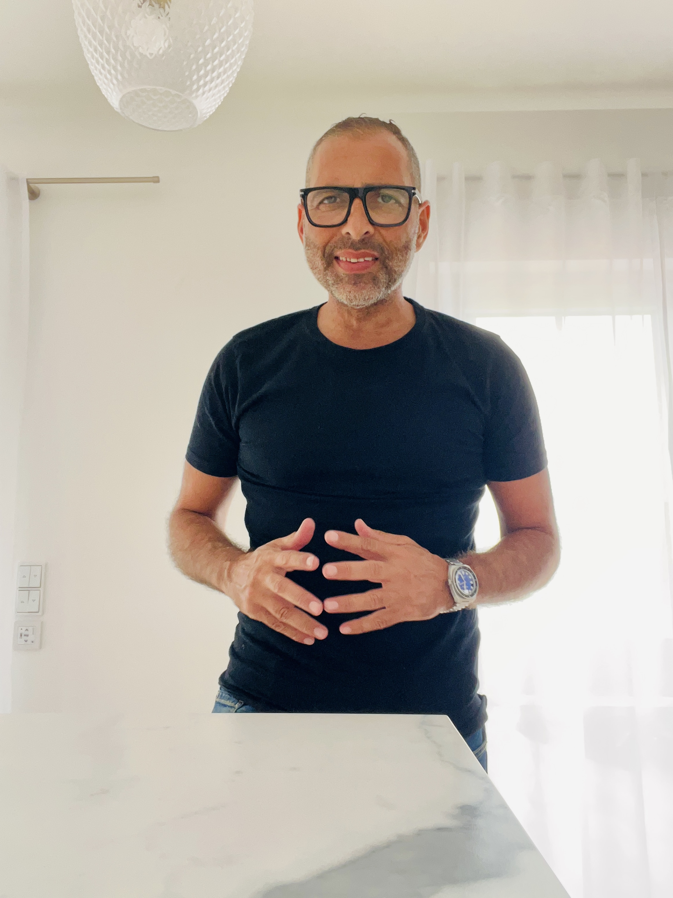
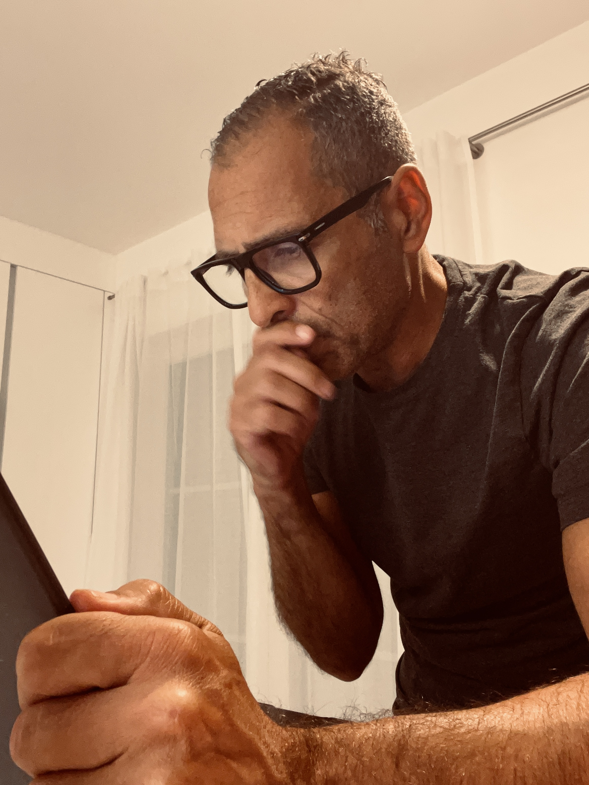

Digital, per Telefon, per Mail, per Social Media – alles schön und gut.
Aber man muss mich persönlich kennenlernen. Das war der Satz eines Kunden.
Er ist geblieben. Diese Seite zeigt, woran ich arbeite.
Ihsan David Khalil.
Zwanzig Jahre Arbeit an einer Frage: Wie stoppt man das Gedankenkarussell, bevor es einen stoppt? Herausgekommen ist ein Buch und eine Methode, die ich in Coachings und Retreats weitergebe.
ihsan-khalil.de →Meine Beratungspraxis für Inhaberinnen und Inhaber im Mittelstand. Ich arbeite dort, wo Entscheidungen anstehen und keiner mehr weiterweiß: Nachfolge, Krise, Positionierung. Dreißig Jahre Unternehmerpraxis als Grundlage.
neckarfreunde.de →Für Vorträge, Interviews und redaktionelle Anfragen. Und für alles, was zwischen den beiden Projekten liegt – wenn Sie nicht wissen, welche Tür die richtige ist, nehmen Sie diese hier.
ik@ihsan-khalil.de →

Dreißig Jahre Unternehmer. Diplom-Betriebswirt, MBA, systemischer Coach. Vater zweier Töchter. Autor. Mein Arbeitsprinzip in einem Satz: Ich bringe Klarheit. In Beratungsmandate, in Führungssituationen, in Köpfe. Persönlich, nicht digital. Deshalb dieses Portal – als Landkarte für alle, die wissen wollen, was ich mache und wo sie mich finden.